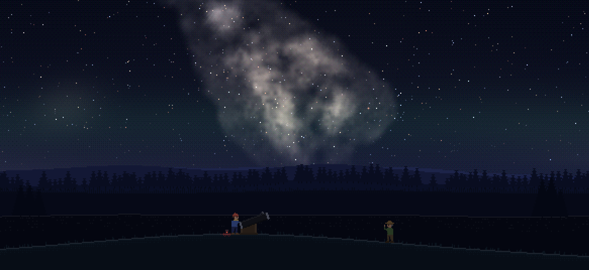
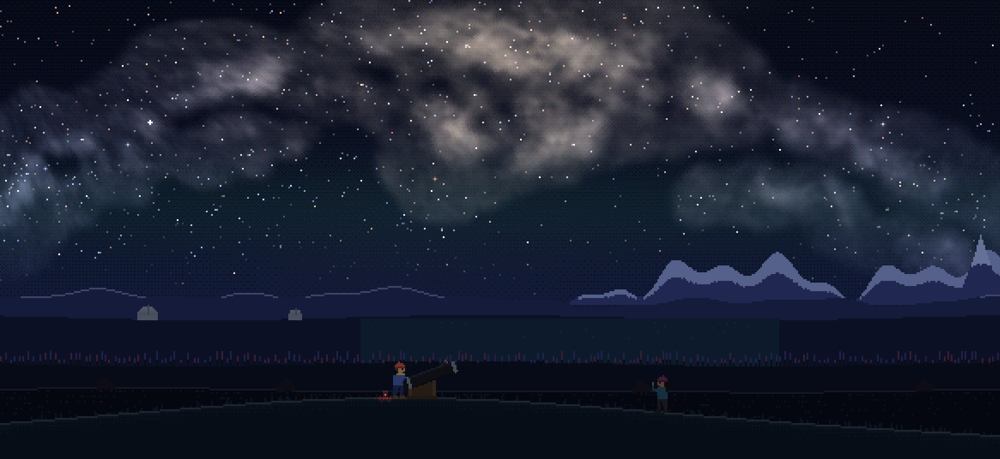
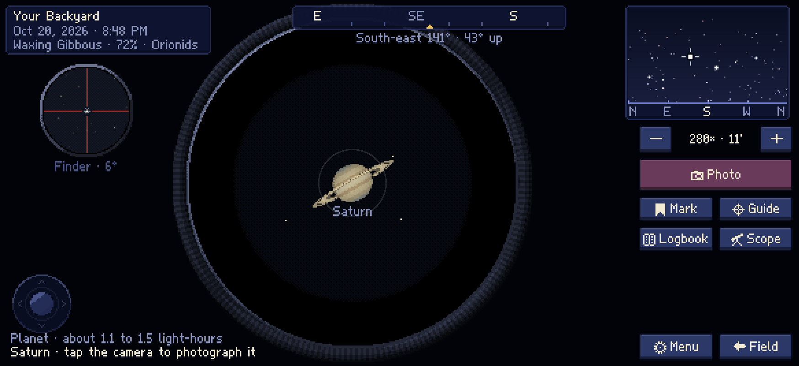
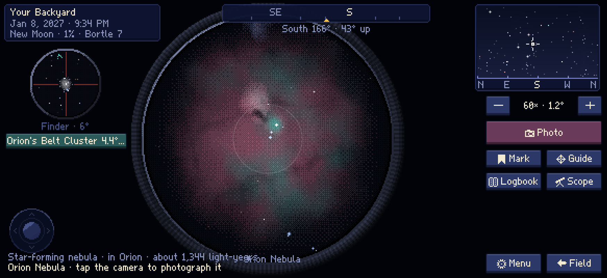
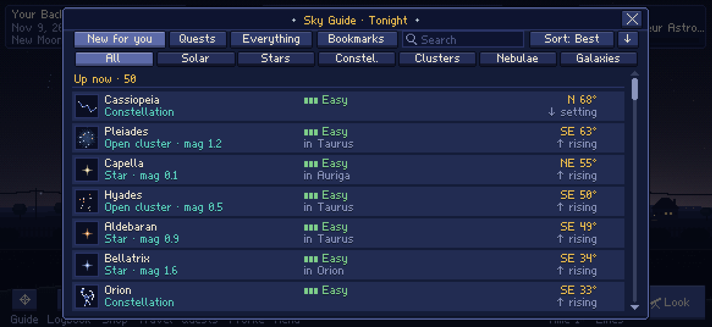
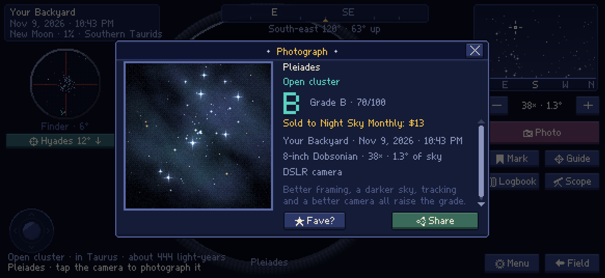

Every star, planet, nebula and galaxy over your hill is real, and shines where it really is tonight. Look up and name the stars with your own eyes, find wonders with the Sky Guide, look through your telescope, and take their picture. Then share what you found.
Look up
Drag to turn around and look up at tonight's real sky. Hold on a bright star, a planet or a constellation to name it with your own eyes.
Look closer
The Sky Guide finds tonight's best. Point your telescope, lean in, and centre it: Saturn's rings, Jupiter's moons, the Orion Nebula, galaxies millions of light-years away.
Capture it
Photograph what you find, sell the best to the magazine, and share your photos as cards and short clips made for Instagram, TikTok and X.




The whole sky, for real
- The real night sky: over 5,000 real stars in their true colours and places, fainter ones from real star counts, all 88 constellations and the Milky Way, for wherever and whenever you're observing.
- About 700 things to find, each with real facts: all 110 Messier objects, dozens more showpieces of both hemispheres, and, for the bigger telescopes of later nights, faint dwarf galaxies, galaxy clusters, blazars and lensed quasars, from the Orion Nebula to the Einstein Cross.
- The solar system as it really moves: the planets, the Moon and its phases, Jupiter's four big moons where they really are, Saturn's ring tilt, Ceres, Vesta and real comets.
- Telescopes that behave like telescopes, from binoculars to a research observatory: aperture, eyepieces, magnification and a finder scope, mounts that track or find things for you, cameras and filters.
- Real places to observe from: your own backyard (wherever you live), and dark-sky sites around the world, from La Palma to Lake Tekapo and the northern lights at Tromsø.
- 37 quests and 129 achievements, people to meet, and a logbook of everything you've seen.
- The Star Radio: 31 calm songs made for the night, with the sounds of each place.
- Plays offline. No ads, no accounts, nothing collected.


Free to play, and the Observatory Pass
Stargazer's Hill is free, with no ads. Six observing sites, from your backyard to the Atacama Desert and Lake Tekapo, and seven telescopes, from binoculars to a 24-inch observatory, are all yours to earn by playing.
One optional purchase, the Observatory Pass, lets you go further. It takes you to Mauna Kea in Hawaiʻi and the South Pole straight away, and later, as you level up, books you time on a 1-metre research telescope (from level 52) and a 10-metre giant on Mauna Kea (from level 68), bought with the money you earn in the game. Buy it once and it's yours for good, and you can restore it on a new phone. It doesn't skip levels or give money.